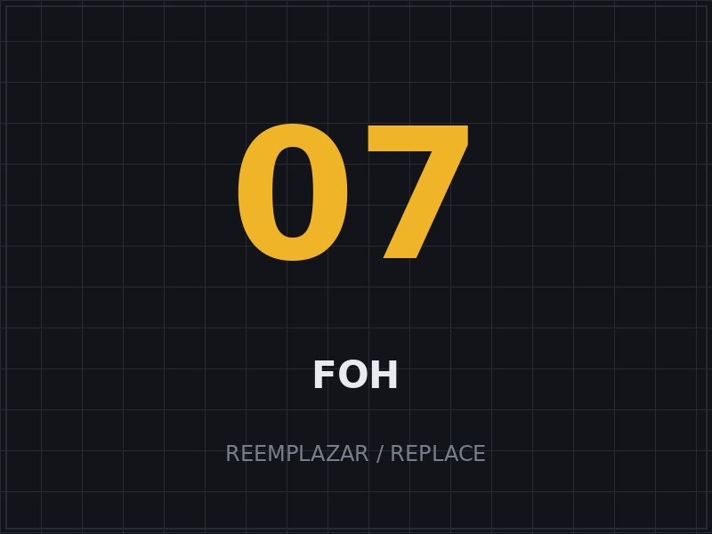
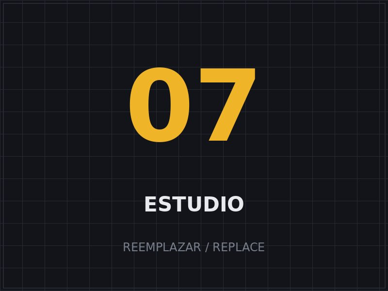
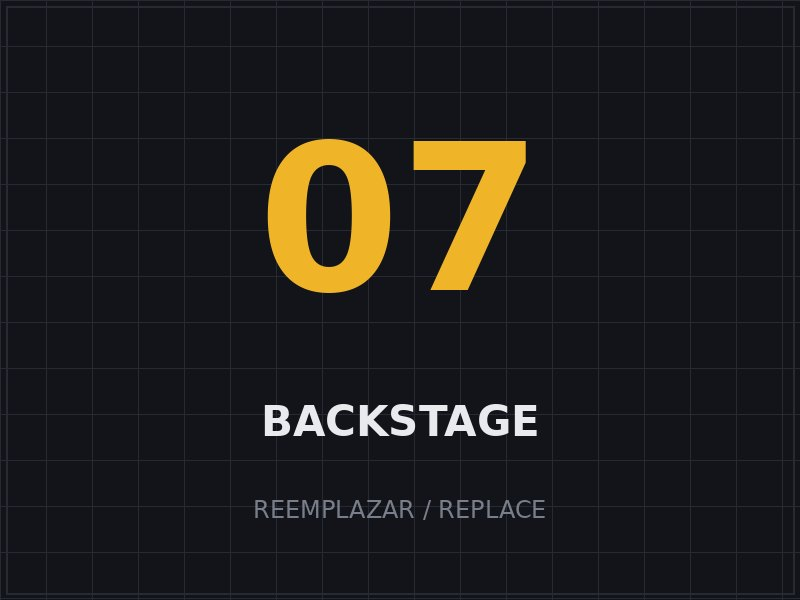
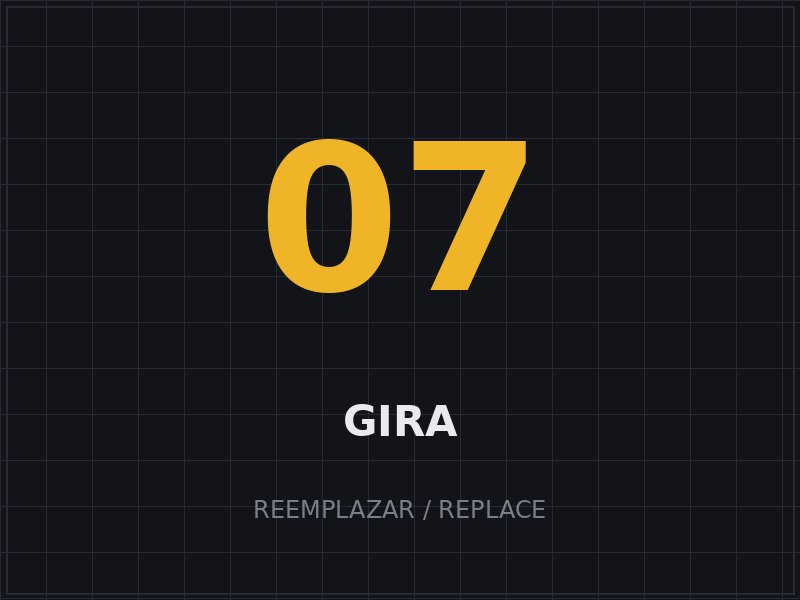
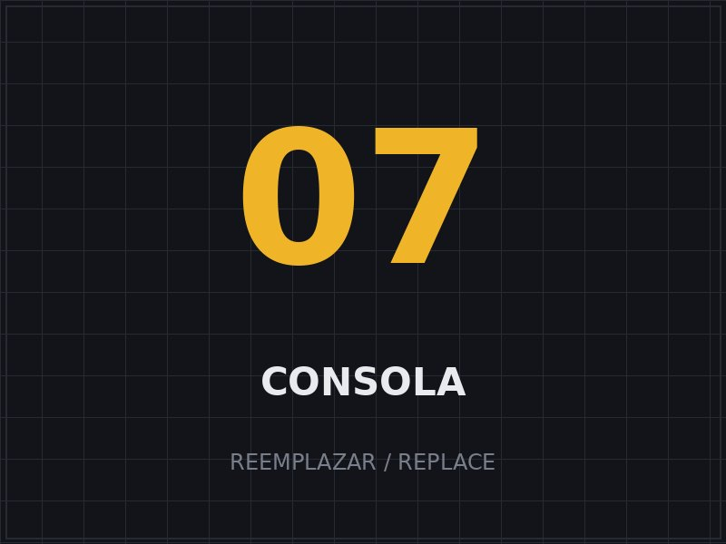

Mezcla de sala (FOH)
Mezcla en vivo precisa y musical para que el público reciba el mejor sonido posible, en cualquier recinto.
Ingeniero de sonido principal (FOH) · Miami, FL
Sonido de sala (FOH) de nivel internacional. Más de 30 años detrás de la consola para algunos de los grandes de la música cubana y latina, incluido el emblemático Willy Chirino.
Adolfo Martínez (“Fito” para todos) es uno de los ingenieros de sonido más respetados surgidos de Cuba. Formado en la exigente escena musical de la isla, lleva más de 4 años radicado en Miami, donde sigue haciendo lo que mejor sabe: que cada nota llegue al público exactamente como el artista la imaginó.
Como ingeniero principal de sala (FOH) del emblemático Willy Chirino, su trabajo lo ha llevado a los escenarios más importantes de la música latina. En la mezcla de sala, Fito combina oído musical, criterio técnico y la calma de quien ha resuelto miles de shows.
Soluciones de audio completas para artistas, giras, festivales y producciones.
Mezcla en vivo precisa y musical para que el público reciba el mejor sonido posible, en cualquier recinto.
Captura, edición y producción de audio en estudio o en vivo, con criterio para sacar lo mejor de cada toma.
Diseño, alineación y optimización de sistemas de PA para cada espacio y tipo de evento.
Riders técnicos, selección de equipos y soporte para giras y producciones de cualquier escala.
¿Ya tienes tus pistas grabadas? Envíamelas y te las devuelvo con una mezcla y un máster profesionales, listos para publicar en cualquier plataforma.
Enviar mis pistas →Algunos de los artistas y proyectos con los que Fito ha trabajado.
“Esto no es solo un trabajo: es lo que soy. Es lo que decidí ser desde niño.”
Adolfo “Fito” Martínez





Disponible para shows, giras, festivales y sesiones de estudio. Escríbeme y conversamos sobre tu producción.